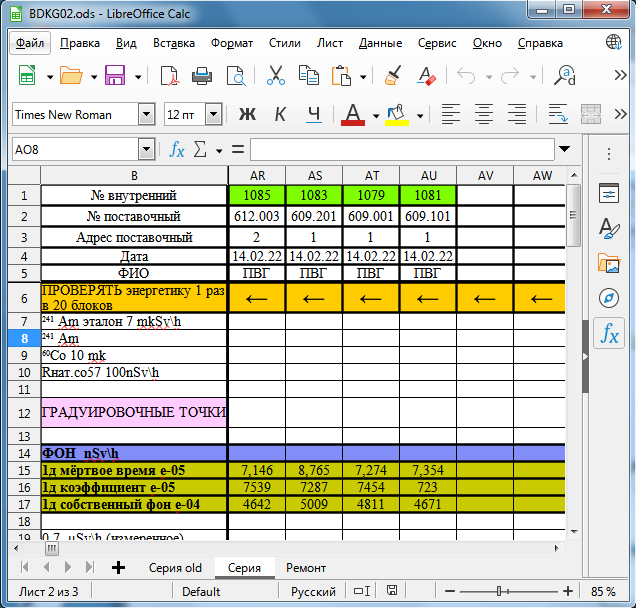

СРК-АТ2327.
Система радиационного контроля

• ДРГ. Блок регистрации
• МРП. Пешеходный монитор
• Портальный монитор
941-й адаптер интерфейсный
942-й адаптер интерфейсный
943-й адаптер интерфейсный
ПУ АТ-900
SARK2 и МРП
СРК портальный монитор
СРК портальный монитор 2
Степень защиты для СРК
СРК табло алгоритм работы
Шаблон листа заказов
Выходной контроль СРК
AT2327 РЭ 2016
ЗАКАЗАТЬ
• МРП. Пешеходный монитор
• Портальный монитор
941-й адаптер интерфейсный
942-й адаптер интерфейсный
943-й адаптер интерфейсный
ПУ АТ-900
SARK2 и МРП
СРК портальный монитор
СРК портальный монитор 2
Степень защиты для СРК
СРК табло алгоритм работы
Шаблон листа заказов
Выходной контроль СРК
AT2327 РЭ 2016
ЗАКАЗАТЬ
Настройка USB-COM адаптера:

Это старая версия адаптера:

Так настраивается "синий" адаптер:

Настройка Ethernet адаптера MOXA:
Настраивается по инструкции. В пункте 3.3 выбрать RS-485, 2 wire. Чуть что, пароль — moxa
Кабель для Устройства Сигнализации:

Вот так укладывается контрольный источник:
Сам источник заказывать у Антона ЖуковскогоКакие бывают кабели для блоков:
- DB9 для USB-COM — 685621.129 — 1,5 м
- DB9 для Ethernet — 685621.129-01 — 1,5 м
- DB9 для маленького табло (ТЭИ) — 315 — согласовывается с заказчиком (примерно 1,5 м)
- ODU прямой (Большой) для БДКГ-204 — 318-01 — 0,5 м
- ODU угловой (Большой) для БДКГ-25 — 318 — 0,5 м
- ТО-7 для БД — 025 — 0,5 м
- ODU (Маленький) для БД — 409 — 0,5 м
- ТО-5 для БД — 109 — 0,5 м
{kind=link}
{kind=link}
{kind=link}
На 318-ый кабель заказать:
- (угловая) Вилка кабельная W11K0C-P07MFD0-6000
- (прямая) Вилка кабельная S21K0C-P07MFD0-6000 + черная резиновая втулочка
Адаптер питания для ПУ-АТ900 (список деталей):

- Адаптер сетевой PSC12R-120
- Розетка PX0410/04S/5560
- Контакты SA3347/1 (2шт)
- Рукав-защита кабеля HV2213
Получить на складе и отдать на монтаж
Как самому сделать адаптер

Подготовка БД
- Наклеить наклейку с номером БД в системе
- Осмотреть внешний вид блока на отсутствие царапин и отслоения краски на корпусе, наличии пломб, наличие отметок о герметичности (для БД с IP65 и выше), и дополнительных наклеек (к примеру "ВНИМАНИЕ! Беречь от удара")
- Подключить БД через адаптер USB-COM к ПК и открыть ПО SARKtech
- Записать адрес БД, соответствующий его местонахождения в системе
- Подключиться к БД по записанному адресу (чем меньше выбранных адресов для сканирования, тем быстрее подключиться к БД). После подключения справа отобразиться подключённый БД с внутренним номером (в скобках).
- Перейти во вкладку "Монитор" и проверить корректность фоновых показаний, а также отсутствие показаний в диапазонах выше 1-ого (для многодиапазонных БД)
- Перейти во вкладку "Управление" и, выбрав в левом окне БД:
- Проверить "Статус". По всем каналам должно быть по нулям
- Записать "Время интегрирования" равным 5
- Записать "Пороги". Рабочий/аварийный порог для БДКГ-02 и БДКГ-204 = 500/1000, БДКН-02 ПП = 1/10, БДКН-02(04) МД = 100/200, УДКГ-37 (обычный режим) = 5000/10000, УДКГ-37 (в режиме ФВР) = 500000000/1000000000
- Записать "Идентификационные данные". Внутренний номер должен быть уже записан, номер поставки = номер СРК (слева от точки), серийный номер = номер БД в системе (справа от точки). Указать тип БД. Если БД подключается через адаптер (АИ-АТ941), то выбрать тип БД "АИ-АТ941", а данные записать подключённого блока (в том числе и внутренний номер)
- Перепроверить записанные данные (функции с "чтение") и коэффициенты.
- Записать в журнал градуировки БД номер (блока в системе) и адрес поставки (если имеются такие графы) 
- Записать в перечень настройки БД заводской номер и данные заказа (имя заказчика и номер заказа)
Адрес считается записанным после того, как выскочить окно "Адрес
записан" (на
картинке ниже). Если выскочило окно с ошибкой - значит отсутствует связь с БД. Устранить
неисправность
и повторить запись адреса заново
Имеются функции требующие пароля (на картинке снизу). Пароль —
текущее
время без ":", к примеру 1422